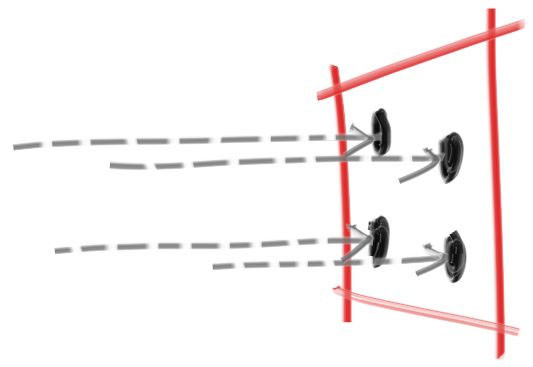

Introduce
Ray-tracing in one weekend is a great introduction to the computer graphics. It's originally based on c++, but I'm a big fan of rust. So I'd like to use rust to implement the code in the book. We should be able to finish it in one weekend, having a tracer and producing some great images.
Rust is a bit different with c++, as it has a more strict static compiler. We'll need more effort to fight with compiler! My rust code maybe is not the most elegant solution, so any contribution is highly welcomed!
Output an Image
The PPM Image Format
To build a render, we need to see an image. We choose the PPM image format.
Its inner format is this from Wikipeida:
 First we need some code to output such an image.
First we need some code to output such an image.
fn main() { const IMAGE_WIDTH: i32 = 256; const IMAGE_HEIGHT: i32 = 256; println!("P3\n{IMAGE_WIDTH} {IMAGE_HEIGHT}\n255"); for j in (0..IMAGE_HEIGHT).rev() { for i in 0..IMAGE_WIDTH { let r = (i as f64) / (IMAGE_WIDTH as f64 - 1 as f64); let g = (j as f64) / (IMAGE_HEIGHT as f64 - 1 as f64); let b = 0.25; let ir: i32 = (255.999 * r) as i32; let ig: i32 = (255.999 * g) as i32; let ib: i32 = (255.999 * b) as i32; println!("{ir} {ig} {ib}"); } } }
Creating an Image File
That's the content of our image file, but we need to redirect it to a file like this:
./target/debug/ray_tracing > image.ppm
This works on Mac and Linux, and things should be similar on Windows, adding a .exe postfix should work.
Open such image.ppm file using ToyViewer on my Mac or any other tool you prefer, we should get such image:

And its content should be something like this when opened by a text editor.
P3
256 256
255
0 255 63
1 255 63
2 255 63
3 255 63
4 255 63
5 255 63
6 255 63
7 255 63
8 255 63
9 255 63
...
Adding a Progress Indicator
A rending process may cost lots of time. So we need an indicator to track the process and is easier to identify an infinite loop or some other errors.
We just use the std::error channel as our info output:
fn main() { const IMAGE_WIDTH: i32 = 256; const IMAGE_HEIGHT: i32 = 256; println!("P3\n{IMAGE_WIDTH} {IMAGE_HEIGHT}\n255"); for j in (0..IMAGE_HEIGHT).rev() { eprintln!("\rScanlines remaining: {j}"); for i in 0..IMAGE_WIDTH { let r = (i as f64) / (IMAGE_WIDTH as f64 - 1 as f64); let g = (j as f64) / (IMAGE_HEIGHT as f64 - 1 as f64); let b = 0.25; let ir: i32 = (255.999 * r) as i32; let ig: i32 = (255.999 * g) as i32; let ib: i32 = (255.999 * b) as i32; println!("{ir} {ig} {ib}"); } } eprintln!("\nDone"); }
The vec3 struct
Every one having used Cuda or some framework should be familiar with vec3 or .etc.
Almost every graphic program have some structs for storing geometric vector or colors.
In many systems these vectors are 4D (3D plus a homogeneous coordinate for geometry,
and RGB plus an alpha transparency channel for colors). In our usage, three coordinates
suffices. We'll use the same struct vec3 for colors, locations, directions, offsets, whatever.
Some people don’t like this because it doesn’t prevent you from doing something silly, like adding
color to a location. They have a good point, but we’re going to always take the “less code” route when
not obviously wrong. In spite of this, we do declare two aliases for vec3: point3 and color.
We use them only to clarify intent and use.
Variables and Methods
We need a new file for our vec3 struct. To do this, create a new file in the same folder as main.rs,
naming vec3.rs, and add
#![allow(unused)] fn main() { mod vec3; }
to the top of the main.rs.
Here is my implementation of Vec3 struct
#![allow(unused)] fn main() { use core::ops::*; #[derive(Debug)] pub struct Vec3 { e: (f64, f64, f64), } pub type Point3 = Vec3; pub type Color = Vec3; impl Vec3 { pub fn new() -> Vec3 { Vec3 { e: (0f64, 0f64, 0f64), } } pub fn from(e0: f64, e1: f64, e2: f64) -> Vec3 { Vec3 { e: (e0, e1, e2) } } pub fn x(&self) -> &f64 { &self.e.0 } pub fn y(&self) -> &f64 { &self.e.1 } pub fn z(&self) -> &f64 { &self.e.2 } pub fn length(&self) -> f64 { self.length_squared().sqrt() } pub fn length_squared(&self) -> f64 { self.x() * self.x() + self.y() * self.y() + self.z() * self.z() } } }
It's safe and convenient to implement clone and copy for our Vec3 struct,
as it can be cloned by only clone the memory, it's completely safe:
#![allow(unused)] fn main() { impl Clone for Vec3 { fn clone(&self) -> Self { Self { e: (*self.x(), *self.y(), *self.z()), } } } impl Copy for Vec3 {} }
And then, implement some operator trait for it
#![allow(unused)] fn main() { impl Neg for Vec3 { type Output = Vec3; fn neg(self) -> Self::Output { Self { e: (-self.x(), -self.y(), -self.z()), } } } impl AddAssign for Vec3 { fn add_assign(&mut self, rhs: Self) { self.e.0 += rhs.x(); self.e.1 += rhs.y(); self.e.2 += rhs.z(); } } impl MulAssign<f64> for Vec3 { fn mul_assign(&mut self, rhs: f64) { self.e.0 *= rhs; self.e.1 *= rhs; self.e.2 *= rhs; } } impl DivAssign<f64> for Vec3 { fn div_assign(&mut self, rhs: f64) { self.e.0 *= 1f64 / rhs; self.e.1 *= 1f64 / rhs; self.e.2 *= 1f64 / rhs; } } impl Index<i32> for Vec3 { type Output = f64; fn index(&self, index: i32) -> &Self::Output { assert!(index <= 2 && index >= 0); match index { 0 => self.x(), 1 => self.y(), 2 => self.z(), _ => unreachable!(), } } } }
as well as some tests:
#![allow(unused)] fn main() { #[cfg(test)] mod test { use super::Vec3; #[test] fn basic_ops() { let vec1 = Vec3::from(1f64, 2f64, 3f64); assert_eq!(1f64, *vec1.x()); assert_eq!(2f64, *vec1.y()); assert_eq!(3f64, *vec1.z()); assert_eq!(1f64, vec1[0]); assert_eq!(2f64, vec1[1]); assert_eq!(3f64, vec1[2]); let vec2 = -vec1; assert_eq!(-1f64, *vec2.x()); assert_eq!(-2f64, *vec2.y()); assert_eq!(-3f64, *vec2.z()); let mut vec3 = Vec3::from(5f64, 3f64, 1f64); vec3 += vec2; assert_eq!(4f64, *vec3.x()); assert_eq!(1f64, *vec3.y()); assert_eq!(-2f64, *vec3.z()); vec3 *= 2f64; assert_eq!(8f64, *vec3.x()); assert_eq!(2f64, *vec3.y()); assert_eq!(-4f64, *vec3.z()); assert_eq!(9f64, Vec3::from(1f64, 2f64, 2f64).length_squared()); assert_eq!(3f64, Vec3::from(1f64, 2f64, 2f64).length()); vec3 /= 2f64; assert_eq!(4f64, *vec3.x()); assert_eq!(1f64, *vec3.y()); assert_eq!(-2f64, *vec3.z()); } } }
We use f64 here, but some ray tracer use f32, that is float. Either is fine.
Vec3 utility Functions
The second part of the file contains vector utility functions.
#![allow(unused)] fn main() { impl PartialEq for Vec3 { fn eq(&self, other: &Self) -> bool { self.x() == other.x() && self.y() == other.y() && self.z() == other.z() } } impl Display for Vec3 { fn fmt(&self, f: &mut std::fmt::Formatter<'_>) -> std::fmt::Result { f.write_str(format!("{} {} {}", self[0], self[1], self[2]).as_str()) } } impl Add for Vec3 { type Output = Self; fn add(self, rhs: Self) -> Self::Output { Self { e: (self.x() + rhs.x(), self.y() + rhs.y(), self.z() + rhs.z()), } } } impl Sub for Vec3 { type Output = Self; fn sub(self, rhs: Self) -> Self::Output { Self { e: (self.x() - rhs.x(), self.y() - rhs.y(), self.z() - rhs.z()), } } } impl Mul for Vec3 { type Output = Self; fn mul(self, rhs: Self) -> Self::Output { Self { e: (self.x() * rhs.x(), self.y() * rhs.y(), self.z() * rhs.z()), } } } impl Mul<f64> for Vec3 { type Output = Self; fn mul(self, rhs: f64) -> Self::Output { Self { e: (self.x() * rhs, self.y() * rhs, self.z() * rhs), } } } impl Mul<Vec3> for f64 { type Output = Vec3; fn mul(self, rhs: Vec3) -> Self::Output { rhs * self } } impl Div<f64> for Vec3 { type Output = Vec3; fn div(self, rhs: f64) -> Self::Output { (1f64 / rhs) * self } } impl Vec3 { pub fn dot(lhs: &Vec3, rhs: &Vec3) -> f64 { lhs.x() * rhs.x() + lhs.y() * rhs.y() + lhs.z() * rhs.z() } pub fn cross(lhs: &Vec3, rhs: &Vec3) -> Vec3 { Self { e: ( lhs.y() * rhs.z() - lhs.z() * rhs.y(), lhs.z() * rhs.x() - lhs.x() * rhs.z(), lhs.x() * rhs.y() - lhs.y() * rhs.x(), ), } } pub fn unit_vector(&self) -> Self { *self / self.length() } } }
And it's test:
#![allow(unused)] fn main() { #[test] fn utility_funtions() { let vec1 = Vec3::from(1f64, 2f64, 3f64); assert_eq!(String::from("1 2 3"), vec1.to_string()); let vec2 = Vec3::from(2f64, 3f64, 4f64); let vec3 = vec1 + vec2; assert_eq!(3f64, *vec3.x()); assert_eq!(5f64, *vec3.y()); assert_eq!(7f64, *vec3.z()); let vec4 = vec3 - vec2; assert_eq!(vec4.x(), vec1.x()); assert_eq!(vec4.y(), vec1.y()); assert_eq!(vec4.z(), vec1.z()); let vec5 = vec4 * vec2; assert_eq!(2f64, *vec5.x()); assert_eq!(6f64, *vec5.y()); assert_eq!(12f64, *vec5.z()); let vec6 = vec4 * 2f64; assert_eq!(2f64, *vec6.x()); assert_eq!(4f64, *vec6.y()); assert_eq!(6f64, *vec6.z()); let vec6 = 2f64 * vec4; assert_eq!(2f64, *vec6.x()); assert_eq!(4f64, *vec6.y()); assert_eq!(6f64, *vec6.z()); let vec7 = vec6 / 2f64; assert_eq!(1f64, *vec7.x()); assert_eq!(2f64, *vec7.y()); assert_eq!(3f64, *vec7.z()); assert_eq!(14f64, Vec3::dot(&vec7, &vec1)); assert_eq!(Vec3::from(1f64, -2f64, 1f64), Vec3::cross(&vec3, &vec1)); assert_eq!( Vec3::from(1f64 / 3f64, 2f64 / 3f64, 2f64 / 3f64), Vec3::from(1f64, 2f64, 2f64).unit_vector() ) } }
Color Utility Functions
Using our Vec3 struct, we'll create a utility function to write a
single pixel's color out to the standard output stream.
Write the following code to a new file called color.rs, add mod color; to
the top of main again.
#![allow(unused)] fn main() { use crate::vec3::*; pub fn write_color<T: std::io::Write>(mut fmt: T, pixel_color: Color) -> std::io::Result<()> { fmt.write_fmt(format_args!( "{} {} {}\n", (255.999 * pixel_color.x()) as i32, (255.999 * pixel_color.y()) as i32, (255.999 * pixel_color.z()) as i32 )) } }
Now we can change our main to use this:
use crate::color::*; use crate::vec3::*; mod color; mod vec3; fn main() { const IMAGE_WIDTH: i32 = 256; const IMAGE_HEIGHT: i32 = 256; println!("P3\n{IMAGE_WIDTH} {IMAGE_HEIGHT}\n255"); for j in (0..IMAGE_HEIGHT).rev() { eprintln!("\rScanlines remaining: {j}"); for i in 0..IMAGE_WIDTH { let pixel_color: Color = Color::from( (i as f64) / (IMAGE_WIDTH as f64 - 1f64), (j as f64) / (IMAGE_HEIGHT as f64 - 1f64), 0.25, ); write_color(std::io::stdout(), pixel_color).unwrap(); } } eprintln!("\nDone"); }
This should be able to generate the same output as the previous Chapter.
Rays, a Simple Camera, and Background
The ray Struct
The one thing that all ray tracers have is a ray struct and a computation of what color is seen along a ray. Let’s think of a ray as a function $$ \textbf{P}(\textit{t}) = A + \textit{t}b $$. Here \(\textbf{P}\) is a 3D position along a line in 3D. \(textbf{A}\) is the ray origin and $b$ is the ray direction. The ray parameter \(\textit{t}\) is a real number (f64 in the code). Plug in a different \(\textit{t}\) and \(\textbf{P}(\textit{t})\) moves the point along the ray. Add in negative \(\textit{t}\)values, and you can go anywhere on the 3D line. For positive \(\textit{t}\), you get only the parts in front of \(\textbf{A}\), and this is what is often called a half-line or ray.

The function \(\textbf{P}(\textit{t})\) in more verbose code form I call ray::at(t)
Create a new ray struct, no need to mention to add ray mod in main.rs, right?
#![allow(unused)] fn main() { use crate::vec3::*; pub struct Ray { orig: Point3, dir: Vec3, } impl Ray { pub fn from(origin: Point3, direction: Vec3) -> Ray { Ray { orig: origin, dir: direction, } } pub fn origin(&self) -> Point3 { self.orig } pub fn direction(&self) -> Vec3 { self.dir } pub fn at(&self, t: f64) -> Point3 { self.orig + t * self.dir } } }
Sending Rays Into the Scene
Now we are ready to turn the corner and make a ray tracer. At the core, the ray tracer sends rays through pixels and computes the color seen in the direction of those rays. The involved steps are:
- calculate the ray from the eye to the pixel
- determine which objects the ray intersects
- compute a color for that intersection point
When first developing a ray tracer, I always do a simple camera for getting the code up and running.
I also make a simple ray_color(ray) function that returns the color of the background (a simple gradient).
I’ve often gotten into trouble using square images for debugging because I transpose \(\textit{x}\) and \(\textit{y}\) too often, so I’ll use a non-square image. For now we'll use a 16:9 aspect ratio, since that's so common.
In addition to setting up the pixel dimensions for the rendered image, we also need to set up a virtual viewport through which to pass our scene rays. For the standard square pixel spacing, the viewport's aspect ratio should be the same as our rendered image. We'll just pick a viewport two units in height. We'll also set the distance between the projection plane and the projection point to be one unit. This is referred to as the “focal length”, not to be confused with “focus distance”, which we'll present later.
I’ll put the “eye” (or camera center if you think of a camera) at \((0,0,0)\). I will have the y-axis go up, and the x-axis to the right. In order to respect the convention of a right handed coordinate system, into the screen is the negative z-axis. I will traverse the screen from the upper left hand corner, and use two offset vectors along the screen sides to move the ray endpoint across the screen. Note that I do not make the ray direction a unit length vector because I think not doing that makes for simpler and slightly faster code.

Below in code, the ray r goes to approximately the pixel centers(I won't worry about exactness for now because we'll add anti-aliasing later):
use crate::color::*; use crate::ray::*; use crate::vec3::*; mod color; mod ray; mod vec3; fn main() { // Image const ASPECT_RATIO: f64 = 16f64 / 9f64; const IMAGE_WIDTH: i32 = 400; const IMAGE_HEIGHT: i32 = (IMAGE_WIDTH as f64 / ASPECT_RATIO) as i32; // Camera let viewport_height = 2f64; let viewport_width = ASPECT_RATIO * viewport_height; let focal_length = 1f64; let origin = Point3::from(0f64, 0f64, 0f64); let horizontal = Vec3::from(viewport_width, 0f64, 0f64); let vertical = Vec3::from(0f64, viewport_height, 0f64); let lower_left_corner = origin - horizontal / 2f64 - vertical / 2f64 - Vec3::from(0f64, 0f64, focal_length); // Render println!("P3\n{IMAGE_WIDTH} {IMAGE_HEIGHT}\n255"); for j in (0..IMAGE_HEIGHT).rev() { eprintln!("\rScanlines remaining: {j}"); for i in 0..IMAGE_WIDTH { let u = (i as f64) / (IMAGE_WIDTH as f64 - 1f64); let v = (j as f64) / (IMAGE_HEIGHT as f64 - 1f64); let r: Ray = Ray::from( origin, lower_left_corner + u * horizontal + v * vertical - origin, ); let pixel_color = ray_color(&r); write_color(std::io::stdout(), pixel_color).unwrap(); } } eprintln!("\nDone"); } fn ray_color(r: &Ray) -> Color { let unit_direction: Vec3 = r.direction().unit_vector(); let t = 0.5 * (unit_direction.y() + 1f64); (1f64 - t) * Color::from(1f64, 1f64, 1f64) + t * Color::from(0.5, 0.7, 1f64) }
The ray_color(ray) function linearly blends white and blue depending on the height of the \(\textit{y}\)
coordinate after scaling the ray direction to unit length (so \(-1.0 < \textit{y} < 1.0\)). Because
we're looking at the \(\textit{y}\) height after normalizing the vector, you'll notice a horizontal
gradient to the color in addition to the vertical gradient.
I then did a standard graphics trick of scaling that to \(0.0 <= \textit{t} <= 1.0\). When \(t = 1.0\) I want blue. When \(t = 0.0\) I want white. In between, I wanta blend. This forms a "linear blend", or "linear interpolation", or "lerp" for short, between two things. A lerp is always of the form:
$$ blendedValue = (1-\textit{t}) * startValue + \textit{t} * endValue $$
with \(\textit{t}\) going from zero to one. In our case this produce:

Adding a Sphere
Let’s add a single object to our ray tracer. People often use spheres in ray tracers because calculating whether a ray hits a sphere is pretty straightforward.
Ray-Sphere Intersection
Recall that the equation for a sphere centered at the origin of radius \(\textbf{R}\) is $$ \textit{x}^2 + \textit{y}^2 + \textit{z}^2 = \textbf{R}^2 $$ Put another way, if a given point \((\textit{x},\textit{y},\textit{z})\) is \(\textit{inside}\) the sphere, then $$ \textit{x}^2 + \textit{y}^2 + \textit{z}^2 < \textbf{R}^2 $$ , and if a given point \(\textit{x}, \textit{y}, \textit{z}\) is outside the sphere, then $$ \textit{x}^2 + \textit{y}^2 + \textit{z}^2 > \textbf{R}^2 $$
It gets uglier if the sphere center is at \((C_x,C_y, C_z )\): $$ (x-C_x)^2 + (y-C_y)^2 + (z-C_z)^2 = r^2 $$
In graphics, you almost want your formulas to be in terms of vectors so all the \(x/y/z\) stuff is under the hood in the vec3 class. You might note that the vector from center \(\textbf{C} = (C_x, C_y, C_z)\) to point \(\textbf{P} = (x,y,z)\) is \((\textbf{P}-\textbf{C})\), and therefore
$$ (\textbf{P}-\textbf{C}) \cdot (\textbf{P}-\textbf{C}) = (x-C_x)^2 + (y-C_y)^2 + (z-C_z)^2 $$
So the equation of the sphere in vector form is: $$ (\textbf{P} - \textbf{C}) \cdot (\textbf{P} - \textbf{C}) = r^2 $$
We can read this as "any point \(\textbf{P}\) that satisfies this equation is on the sphere". We want to know if our ray \(\textbf{P}(t)=\textbf{A}+t\textbf{b}\) ever hits the sphere anywere. If it does hit the sphere, there is some \(t\) for which \(\textbf{P}(t)\) satisfies the sphere equation. So we are looking for any \(t\) where this is true: $$ (\textbf{P}(t)-\textbf{C})\cdot(\textbf{P}(t)-\textbf{C}) = r^2 $$
or expanding the full form of the ray \(\textbf{P}(t)\): $$ (\textbf{A}+t\textbf{b}-\textbf{C})\cdot(\textbf{A}+t\textbf{b}-\textbf{C})=r^2 $$
The rules of vector algebra are all that we would want here. If we expand that equation and move all the terms to the left hand side we get: $$ t^2\textbf{b}\cdot\textbf{b} + 2t\textbf{b}\cdot(\textbf{A}-\textbf{C})+(\textbf{A}-\textbf{C})\cdot(\textbf{A}-\textbf{C})-r^2=0 $$
The vectors and \(r\) in that equation are all constant and known. The unknown is \(t\), and the equation is a quadratic, like you probably saw in your high school math class. You can solve for \(t\) and there is a square root part that is either positive (meaning two real solutions), negative (meaning no real solutions), or zero (meaning one real solution). In graphics, the algebra almost always relates very directly to the geometry. What we have is:

Creating Our First Raytraced Image
If we take that math and hard-code it into our program, we can test it by coloring red any pixel that hits a small sphere we place at −1 on the z-axis:
#![allow(unused)] fn main() { fn hit_sphere(center: &Point3, radius: f64, r: &Ray) -> bool { let oc: Vec3 = r.origin() - *center; let a = Vec3::dot(&r.direction(), &r.direction()); let b = 2.0 * Vec3::dot(&oc, &r.direction()); let c = Vec3::dot(&oc, &oc) - radius * radius; (b * b - 4.0 * a * c) > 0f64 } fn ray_color(r: &Ray) -> Color { if hit_sphere(&Point3::from(0f64, 0f64, -1f64), 0.5, r) { return Color::from(1f64, 0f64, 0f64); } let unit_direction: Vec3 = r.direction().unit_vector(); let t = 0.5 * (unit_direction.y() + 1f64); (1f64 - t) * Color::from(1f64, 1f64, 1f64) + t * Color::from(0.5, 0.7, 1f64) } }
What we get is this:

Now this lacks all sorts of things — like shading and reflection rays and more than one object — but we are closer to halfway done than we are to our start! One thing to be aware of is that we tested whether the ray hits the sphere at all, but \(t<0\) solutions work fine. If you change your sphere center to \(z=+1\) you will get exactly the same picture because you see the things behind you. This is not a feature! We’ll fix those issues next.
Surface Normals and Multiple Objects
Shading with Surface Normals
First, let’s get ourselves a surface normal so we can shade. This is a vector that is perpendicular to the surface at the point of intersection. There are two design decisions to make for normals. The first is whether these normals are unit length. That is convenient for shading so I will say yes, but I won’t enforce that in the code. This could allow subtle bugs, so be aware this is personal preference as are most design decisions like that. For a sphere, the outward normal is in the direction of the hit point minus the center:

On the earth, this implies that the vecor form the earth's center to you points straight up. Let's throw that into the code now, and shade it. We don't have any lights or anything yet, so let's just visualize the normals with a color map. A common trick used for visual normals (because it's easy and somewhat intuitive to assume \(\textbf{n}\) is a unit length vector -- so each component is between -1 and 1) is to map each component to the interval from 0 to 1, and then map x/y/z to r/g/b. For the normal, we need the hit point, not just whether we hit or not. We only have one sphere in the scene, and it's directly in front of the camera, so we won't worry about negative values of \(t\) yet. We'll just assume the closest hit point (smallest \(t\)). These changes in the code let us compute and visualize \(\textbf{n}\):
#![allow(unused)] fn main() { fn hit_sphere(center: &Point3, radius: f64, r: &Ray) -> f64 { let oc: Vec3 = r.origin() - *center; let a = Vec3::dot(&r.direction(), &r.direction()); let b = 2.0 * Vec3::dot(&oc, &r.direction()); let c = Vec3::dot(&oc, &oc) - radius * radius; let discriminant = b * b - 4.0 * a * c; if discriminant < 0.0 { -1.0 } else { (-b - discriminant.sqrt()) / (2.0 * a) } } fn ray_color(r: &Ray) -> Color { let t = hit_sphere(&Point3::from(0f64, 0f64, -1f64), 0.5, r); if t > 0.0 { let n = Vec3::unit_vector(&(r.at(t) - Vec3::from(0.0, 0.0, -1.0))); return 0.5 * Color::from(n.x() + 1.0, n.y() + 1.0, n.z() + 1.0); } let unit_direction: Vec3 = r.direction().unit_vector(); let t = 0.5 * (unit_direction.y() + 1f64); (1f64 - t) * Color::from(1f64, 1f64, 1f64) + t * Color::from(0.5, 0.7, 1f64) } }
And that yields this picture:

Simplifying the Ray-Sphere Intersection Code
Let's revisit the ray-sphere equation:
#![allow(unused)] fn main() { fn hit_sphere(center: &Point3, radius: f64, r: &Ray) -> f64 { let oc: Vec3 = r.origin() - *center; let a = Vec3::dot(&r.direction(), &r.direction()); let b = 2.0 * Vec3::dot(&oc, &r.direction()); let c = Vec3::dot(&oc, &oc) - radius * radius; let discriminant = b * b - 4.0 * a * c; if discriminant < 0.0 { -1.0 } else { (-b - discriminant.sqrt()) / (2.0 * a) } } }
First recall that a vector dotted with itself is equal to the squared length of that vector.
Second, notice how the equation for b has a factor of two in it. Consider what happens to the quardratic equation if \(b=2h\):
$$ \frac{-b\pm\sqrt{b^2-4ac}}{2a} \\ = \frac{-2h\pm\sqrt{(2h)^2-4ac}}{2a} \\ = \frac{-2h\pm2\sqrt{h^2-ac}}{2a} \\ = \frac{-h\pm\sqrt{h^2-ac}}{a} $$
Using these observations, we can now simplify the sphere-intersection code to this:
#![allow(unused)] fn main() { fn hit_sphere(center: &Point3, radius: f64, r: &Ray) -> f64 { let oc: Vec3 = r.origin() - *center; let a = r.direction().length_squared(); let half_b = Vec3::dot(&oc, &r.direction()); let c = oc.length_squared() - radius * radius; let discriminant = half_b * half_b - a * c; if discriminant < 0.0 { -1.0 } else { (-half_b - discriminant.sqrt()) / a } } }
An Abstraction for Hittable Objects
Now, how about several spheres? While it is tempting to have an array of spheres, a very clean solution is the make an “abstract class” for anything a ray might hit, and make both a sphere and a list of spheres just something you can hit. What that class should be called is something of a quandary —- calling it an “object” would be good if not for “object oriented” programming. “Surface” is often used, with the weakness being maybe we will want volumes. “hittable” emphasizes the member function that unites them. I don’t love any of these, but I will go with “hittable”.
This hittable abstract class will have a hit function that takes in a ray. Most ray tracers have found it convenient to add a valid interval for hits \(t_{min}\) to \(t_{max}\), so the hit only “counts” if \(t_{min}<t<t_{max}\). For the initial rays this is positive \(t\), but as we will see, it can help some details in the code to have an interval \(t_{min}\) to \(t_{max}\). One design question is whether to do things like compute the normal if we hit something. We might end up hitting something closer as we do our search, and we will only need the normal of the closest thing. I will go with the simple solution and compute a bundle of stuff I will store in some structure. Here’s the abstract class:
#![allow(unused)] fn main() { use crate::ray::*; use crate::vec3::*; pub struct HitRecord { p: Point3, normal: Vec3, t: f64, } impl HitRecord { pub fn new() -> Self { HitRecord { p: Point3::new(), normal: Vec3::new(), t: Default::default(), } } pub fn from(point: Point3, n: Vec3, hit_t: f64) -> Self { HitRecord { p: point, normal: n, t: hit_t, } } pub fn t(&self) -> f64 { self.t } pub fn normal(&self) -> Vec3 { self.normal } pub fn p(&self) -> Vec3 { self.p } } pub trait Hittable { fn hit(&self, r: &Ray, t_min: f64, t_max: f64) -> Option<HitRecord>; } }
And here's the sphere:
#![allow(unused)] fn main() { use crate::hittable::*; use crate::vec3::*; pub struct Sphere { center: Point3, radius: f64, } impl Sphere { pub fn new() -> Self { Sphere { center: Point3::new(), radius: Default::default(), } } pub fn from(cen: Point3, r: f64) -> Self { Sphere { center: cen, radius: r, } } } }
Front Faces Versus Back faces
The second design decision for normals is whether they should always point out. At present, the normal found will always be in the direction of the center to the intersection point (the normal points out). If the ray intersects the sphere from the outside, the normal points against the ray. If the ray intersects the sphere from the inside, the normal (which always points out) points with the ray. Alternatively, we can have the normal always point against the ray. If the ray is outside the sphere, the normal will point outward, but if the ray is inside the sphere, the normal will point inward.

We need to choose one of these possibilities because we will eventually want to determine which side of the surface that the ray is coming from. This is important for objects that are rendered differently on each side, like the text on a two-sided sheet of paper, or for objects that have an inside and an outside, like glass balls.
If we decide to have the normals always point out, then we will need to determine which side the ray is on when we color it. We can figure this out by comparing the ray with the normal. If the ray and the normal face in the same direction, the ray is inside the object, if the ray and the normal face in the opposite direction, then the ray is outside the object. This can be determined by taking the dot product of the two vectors, where if their dot is positive, the ray is inside the sphere.
#![allow(unused)] fn main() { if Vec3::dot(ray_direction, outward_normal) > 0.0 { // ray is inside the sphere todo!() } else { // ray is outside the sphere todo!() } }
If we decide to have the normals always point against the ray, we won't be able to use the dot product to determine which side of the surface the ray is on. Instead, we would need to store that information:
#![allow(unused)] fn main() { let mut front_face = false; if Vec3::dot(ray_direction, outward_normal) > 0.0 { // ray is inside the sphere normal = - outward_normal; front_face = false; } else { // ray is outside the sphere normal = ouward_normal; front_face = true; } }
We can set things up so that normals always point “outward” from the surface, or always point against the incident ray. This decision is determined by whether you want to determine the side of the surface at the time of geometry intersection or at the time of coloring. In this book we have more material types than we have geometry types, so we'll go for less work and put the determination at geometry time. This is simply a matter of preference, and you'll see both implementations in the literature.
We add the front_face bool to the HitRecord struct.
#![allow(unused)] fn main() { pub struct HitRecord { p: Point3, normal: Vec3, t: f64, front_face: bool, } impl HitRecord { pub fn new() -> Self { HitRecord { p: Point3::new(), normal: Vec3::new(), t: Default::default(), front_face: Default::default(), } } pub fn from(point: Point3, n: Vec3, hit_t: f64, front: bool) -> Self { HitRecord { p: point, normal: n, t: hit_t, front_face: front, } } } }
We'll also add a function to solve this calculation for us.
#![allow(unused)] fn main() { #[inline] pub fn set_face_normal(&mut self, r: &Ray, outward_normal: &Vec3) { self.front_face = Vec3::dot(&r.direction(), outward_normal) < 0.0; self.normal = if self.front_face { *outward_normal } else { -*outward_normal }; } }
And then we add the surface side determination to the class:
#![allow(unused)] fn main() { impl Hittable for Sphere { fn hit(&self, r: &crate::ray::Ray, t_min: f64, t_max: f64) -> Option<HitRecord> { let oc: Vec3 = r.origin() - self.center; let a = r.direction().length_squared(); let half_b = Vec3::dot(&oc, &r.direction()); let c = oc.length_squared() - self.radius * self.radius; let discriminant = half_b * half_b - a * c; if discriminant < 0.0 { return None; } let sqrtd = discriminant.sqrt(); // Find the nearest root that lies in the acceptable range. let mut root = (-half_b - sqrtd) / a; if root < t_min || t_max < root { root = (-half_b + sqrtd) / a; if root < t_min || t_max < root { return None; } } let p = r.at(root); let mut rec = HitRecord::from(p, (p - self.center) / self.radius, root); let outward_normal = (p - self.center) / self.radius; rec.set_face_normal(r, &outward_normal); Some(rec) } } }
A List of Hittable Objects
We have a generic object called a Hittable that the ray can intersect with. We now add a class that stores a lisxt of Hittables :
#![allow(unused)] fn main() { use std::rc::Rc; use crate::hittable::HitRecord; use crate::hittable::Hittable; use crate::ray::*; use crate::vec3::*; pub struct HittableList { objects: Vec<Rc<dyn Hittable>>, } impl HittableList { pub fn new() -> Self { HittableList { objects: Default::default(), } } pub fn from(object: Rc<dyn Hittable>) -> Self { HittableList { objects: vec![object], } } pub fn clear(&mut self) { self.objects.clear(); } pub fn add(&mut self, object: Rc<dyn Hittable>) { self.objects.push(object); } } impl Hittable for HittableList { fn hit(&self, r: &Ray, t_min: f64, t_max: f64) -> Option<HitRecord> { let mut hit_anything = false; let mut closest_so_far = t_max; let mut res_rec = HitRecord::new(); for object in self.objects.iter() { if let Some(temp_rec) = object.hit(r, t_min, closest_so_far) { hit_anything = true; closest_so_far = temp_rec.t(); res_rec = temp_rec; } } if hit_anything { Some(res_rec) } else { None } } } }
Some Rust features
Options
todo!()
Rc<>
todo!()
Common Constants and Utility Functions
Our general main header file:
#![allow(unused)] fn main() { pub use std::f64::consts::PI; // Utility Functions #[inline] pub fn degrees_to_radians(degrees: f64) -> f64 { degrees * PI / 180.0 } }
and the new main:
use std::rc::Rc; use hittable::HitRecord; use hittable::Hittable; use crate::color::*; use crate::hittable_list::*; use crate::ray::*; use crate::rtweekend::*; use crate::sphere::*; use crate::vec3::*; mod color; mod hittable; mod hittable_list; mod ray; mod rtweekend; mod sphere; mod vec3; fn main() { // Image const ASPECT_RATIO: f64 = 16f64 / 9f64; const IMAGE_WIDTH: i32 = 400; const IMAGE_HEIGHT: i32 = (IMAGE_WIDTH as f64 / ASPECT_RATIO) as i32; // World let mut world = HittableList::new(); world.add(Rc::new(Sphere::from(Point3::from(0f64, 0f64, -1f64), 0.5))); world.add(Rc::new(Sphere::from( Point3::from(0f64, -100.5f64, -1f64), 100f64, ))); // Camera let viewport_height = 2f64; let viewport_width = ASPECT_RATIO * viewport_height; let focal_length = 1f64; let origin = Point3::from(0f64, 0f64, 0f64); let horizontal = Vec3::from(viewport_width, 0f64, 0f64); let vertical = Vec3::from(0f64, viewport_height, 0f64); let lower_left_corner = origin - horizontal / 2f64 - vertical / 2f64 - Vec3::from(0f64, 0f64, focal_length); // Render println!("P3\n{IMAGE_WIDTH} {IMAGE_HEIGHT}\n255"); for j in (0..IMAGE_HEIGHT).rev() { eprintln!("\rScanlines remaining: {j}"); for i in 0..IMAGE_WIDTH { let u = (i as f64) / (IMAGE_WIDTH as f64 - 1f64); let v = (j as f64) / (IMAGE_HEIGHT as f64 - 1f64); let r: Ray = Ray::from( origin, lower_left_corner + u * horizontal + v * vertical - origin, ); let pixel_color = ray_color(&r, &world); write_color(std::io::stdout(), pixel_color).unwrap(); } } eprintln!("\nDone"); } fn ray_color(r: &Ray, world: &dyn Hittable) -> Color { if let Some(rec) = world.hit(r, 0f64, Infinity) { return 0.5 * (rec.normal() + Color::from(1f64, 1f64, 1f64)); } let unit_direction: Vec3 = r.direction().unit_vector(); let t = 0.5 * (unit_direction.y() + 1f64); (1f64 - t) * Color::from(1f64, 1f64, 1f64) + t * Color::from(0.5, 0.7, 1f64) }
This yields a picture that is really just a visualization of where the spheres are along with their surface normal. This is often a great way to look at your model for flaws and characteristics.

Antialiasing
When a real camera takes a picture, there are usually no jaggies along edges because the edge pixels are a blend of some foreground and some background. We can get the same effect by averaging a bunch of samples inside each pixel. We will not bother with stratification. This is controversial, but is usual for my programs. For some ray tracers it is critical, but the kind of general one we are writing doesn’t benefit very much from it and it makes the code uglier. We abstract the camera class a bit so we can make a cooler camera later.
Some Random Number Utilities
One thing we need is a random number generator that returns real random numbers. We need a function that returns a canonical random number which by convention returns a random real in the range \(0\leq r<1\) . The “less than” before the 1 is important as we will sometimes take advantage of that.
A simple approach to this is to use the rand crate. We need to modify the Cargo.toml first:
[dependencies]
rand = "0.8.5"
For example, the rand::random::u8 in the range u8::MIN and u8::MAX. Hence we can get a real random number as desired with the following code snippet, added to rtweekend.rs:
#![allow(unused)] fn main() { #[inline] pub fn random_double() -> f64 { rand::random::<u32>() as f64 / (std::u32::MAX as f64) } #[inline] pub fn random_double_rng(min: f64, max: f64) -> f64 { min + (max - min) * rand::random::<f64>() } }
Generating Pixels with Multiple Samples
For a given pixel we have several samples within that pixel and send rays through each of the samples. The colors of these rays are then averaged:

Now's a good time to create a camera class to manage our virtual camera and the related tasks of scene scampling. The following implements a simple camera using the axis-aligned camera from before:
#![allow(unused)] fn main() { use crate::{ray::Ray, vec3::*}; pub struct Camera { origin: Point3, lower_left_corner: Point3, horizonal: Vec3, vertical: Vec3, } impl Camera { pub fn new() -> Self { let aspect_ratio = 16.0 / 9.0; let viewport_height = 2.0; let viewport_width = aspect_ratio * viewport_height; let focal_length = 1.0; let origin_t = Point3::from(0f64, 0f64, 0f64); let horizonal_t = Vec3::from(viewport_width, 0.0, 0.0); let vertical_t = Vec3::from(0.0, viewport_height, 0.0); Camera { origin: origin_t, lower_left_corner: origin_t - horizonal_t / 2.0 - vertical_t / 2.0 - Vec3::from(0.0, 0.0, focal_length), vertical: vertical_t, horizonal: horizonal_t, } } pub fn get_ray(&self, u: f64, v: f64) -> Ray { Ray::from( self.origin, self.lower_left_corner + u * self.horizonal + v * self.vertical - self.origin, ) } } }
To handle the multi-sampled color computation, we'll update the write_color() function. Rather than adding in a fractional contribution each time we acumulate more light to the color, just add the full color each iteration, and then perform a single divide at the end (by the number of samples) when writing out the color. In addition, we'll add a handy utility function to the rtweekend.rs utility header: clamp(x,min,max), which clamps the value x to the range [min,max]:
#![allow(unused)] fn main() { #[inline] pub fn clamp(x: f64, min: f64, max: f64) -> f64 { if x < min { min } else if x > max { max } else { x } } }
#![allow(unused)] fn main() { use crate::{rtweekend::clamp, vec3::*}; pub fn write_color<T: std::io::Write>( mut fmt: T, pixel_color: Color, samples_per_pixel: i32, ) -> std::io::Result<()> { let mut r = *pixel_color.x(); let mut g = *pixel_color.y(); let mut b = *pixel_color.z(); // Divide the color by the number of samples. let scale = 1.0 / samples_per_pixel as f64; r *= scale; g *= scale; b *= scale; fmt.write_fmt(format_args!( "{} {} {}\n", (256.0 * clamp(r, 0.0, 0.999)) as i32, (256.0 * clamp(g, 0.0, 0.999)) as i32, (256.0 * clamp(b, 0.0, 0.999)) as i32, )) } }
main is also changed:
fn main() { // Image const ASPECT_RATIO: f64 = 16f64 / 9f64; const IMAGE_WIDTH: i32 = 400; const IMAGE_HEIGHT: i32 = (IMAGE_WIDTH as f64 / ASPECT_RATIO) as i32; const SAMPLES_PER_PIXEL: i32 = 100; // World let mut world = HittableList::new(); world.add(Rc::new(Sphere::from(Point3::from(0f64, 0f64, -1f64), 0.5))); world.add(Rc::new(Sphere::from( Point3::from(0f64, -100.5f64, -1f64), 100f64, ))); // Camera let cam = Camera::new(); // Render println!("P3\n{IMAGE_WIDTH} {IMAGE_HEIGHT}\n255"); for j in (0..IMAGE_HEIGHT).rev() { eprintln!("\rScanlines remaining: {j}"); for i in 0..IMAGE_WIDTH { let mut pixel_color: Color = Color::from(0.0, 0.0, 0.0); for s in 0..SAMPLES_PER_PIXEL { let u = (i as f64 + random_double()) / (IMAGE_WIDTH - 1) as f64; let v = (j as f64 + random_double()) / (IMAGE_HEIGHT - 1) as f64; let r = cam.get_ray(u, v); pixel_color += ray_color(&r, &world); } write_color(std::io::stdout(), pixel_color, SAMPLES_PER_PIXEL).unwrap(); } } eprintln!("\nDone"); }
Zooming into the image that is produced, we can see the difference in edge pixels.

Diffuse Materials
Now that we have objects and multiple rays per pixel, we can make some realistic looking materials. We’ll start with diffuse (matte) materials. One question is whether we mix and match geometry and materials (so we can assign a material to multiple spheres, or vice versa) or if geometry and material are tightly bound (that could be useful for procedural objects where the geometry and material are linked). We’ll go with separate — which is usual in most renderers — but do be aware of the limitation.
A Simple Diffuse Material
Diffuse objects that don't emit light merely take on the color of their surroundings, but they modulate that with their own intrinsic color. Light that reflects off a diffuse surface has its direction randomized. So, if we send three rays into a crack between two diffuse surfaces they will each have different random behavior:

They also might be absorbed rather than reflected. The darker the surface, the more likely absorption is. (That’s why it is dark!) Really any algorithm that randomizes direction will produce surfaces that look matte. One of the simplest ways to do this turns out to be exactly correct for ideal diffuse surfaces. (I used to do it as a lazy hack that approximates mathematically ideal Lambertian.)
(Reader Vassillen Chizhov proved that the lazy hack is indeed just a lazy hack and is inaccurate. The correct representation of ideal Lambertian isn't much more work, and is presented at the end of the chapter.)
There are two unit radius spheres tangent to the hit point \(p\) of a surface. These two spheres have a center of \((P+n)\) and \((P-n)\), where \(n\) is the normal of the surface. The sphere with a center at \((P-n)\) is considered inside the surface, whereas the sphere with center \((P+n)\) is considered outside the surface. Select the tangent unit radius sphere that is on the same side of the surface as the ray origin. Pick a random point \(S\) inside this unit radius sphere and send a ray from the hit point 𝐏 to the random point \(S\) (this is the vector \((S-P)\):
We need a way to pick a random point in a unit radius sphere. We’ll use what is usually the easiest algorithm: a rejection method. First, pick a random point in the unit cube where x, y, and z all range from −1 to +1. Reject this point and try again if the point is outside the sphere.
#![allow(unused)] fn main() { impl Vec3{ #[inline] pub fn random() -> Self { Vec3 { e: (random_double(), random_double(), random_double()), } } #[inline] pub fn random_rng(min: f64, max: f64) -> Self { Vec3 { e: ( random_double_rng(min, max), random_double_rng(min, max), random_double_rng(min, max), ), } } pub fn random_in_unit_sphere() -> Self { loop { let p = Vec3::random_rng(-1.0, 1.0); if p.length_squared() < 1f64 { return p; } } } } }
Then update the ray_color() function to use the new radom direction generator:
#![allow(unused)] fn main() { fn ray_color(r: &Ray, world: &dyn Hittable) -> Color { if let Some(rec) = world.hit(r, 0f64, Infinity) { let target: Point3 = rec.p() + rec.normal() + Vec3::random_in_unit_sphere(); return 0.5 * ray_color(&Ray::from(rec.p(), target - rec.p()), world); } let unit_direction: Vec3 = r.direction().unit_vector(); let t = 0.5 * (unit_direction.y() + 1f64); (1f64 - t) * Color::from(1f64, 1f64, 1f64) + t * Color::from(0.5, 0.7, 1f64) } }
Limiting the Number of Child Rays
There's one potential problem lurking here. Notice that the ray_color function is recursive. When will it stop recursing? When it fails to hit anything. In some cases, however, that may be a long time — long enough to blow the stack. To guard against that, let's limit the maximum recursion depth, returning no light contribution at the maximum depth:
fn main() { // Image const ASPECT_RATIO: f64 = 16f64 / 9f64; const IMAGE_WIDTH: i32 = 400; const IMAGE_HEIGHT: i32 = (IMAGE_WIDTH as f64 / ASPECT_RATIO) as i32; const SAMPLES_PER_PIXEL: i32 = 100; const MAX_DEPTH: i32 = 50; // World let mut world = HittableList::new(); world.add(Rc::new(Sphere::from(Point3::from(0f64, 0f64, -1f64), 0.5))); world.add(Rc::new(Sphere::from( Point3::from(0f64, -100.5f64, -1f64), 100f64, ))); // Camera let cam = Camera::new(); // Render println!("P3\n{IMAGE_WIDTH} {IMAGE_HEIGHT}\n255"); for j in (0..IMAGE_HEIGHT).rev() { eprintln!("\rScanlines remaining: {j}"); for i in 0..IMAGE_WIDTH { let mut pixel_color: Color = Color::from(0.0, 0.0, 0.0); for s in 0..SAMPLES_PER_PIXEL { let u = (i as f64 + random_double()) / (IMAGE_WIDTH - 1) as f64; let v = (j as f64 + random_double()) / (IMAGE_HEIGHT - 1) as f64; let r = cam.get_ray(u, v); pixel_color += ray_color(&r, &world, MAX_DEPTH); } write_color(std::io::stdout(), pixel_color, SAMPLES_PER_PIXEL).unwrap(); } } eprintln!("\nDone"); } fn ray_color(r: &Ray, world: &dyn Hittable, depth: i32) -> Color { if depth <= 0 { return Color::from(0.0, 0.0, 0.0); } if let Some(rec) = world.hit(r, 0f64, Infinity) { let target: Point3 = rec.p() + rec.normal() + Vec3::random_in_unit_sphere(); return 0.5 * ray_color(&Ray::from(rec.p(), target - rec.p()), world, depth - 1); } let unit_direction: Vec3 = r.direction().unit_vector(); let t = 0.5 * (unit_direction.y() + 1f64); (1f64 - t) * Color::from(1f64, 1f64, 1f64) + t * Color::from(0.5, 0.7, 1f64) }
This gives us:

Note: If you met up with some performance issue, try using the release mode: cargo build --release
Using Gamma Correction for Accurate Color Intensity
Note the shadowing under the sphere. This picture is very dark, but our spheres only absorb half the energy on each bounce, so they are 50% reflectors. If you can’t see the shadow, don’t worry, we will fix that now. These spheres should look pretty light (in real life, a light grey). The reason for this is that almost all image viewers assume that the image is “gamma corrected”, meaning the 0 to 1 values have some transform before being stored as a byte. There are many good reasons for that, but for our purposes we just need to be aware of it. To a first approximation, we can use “gamma 2” which means raising the color to the power 1/𝑔𝑎𝑚𝑚𝑎, or in our simple case ½, which is just square-root:
#![allow(unused)] fn main() { pub fn write_color<T: std::io::Write>( mut fmt: T, pixel_color: Color, samples_per_pixel: i32, ) -> std::io::Result<()> { // Divide the color by the number of samples and gamma-correct for gamma=2.0 let scale = 1.0 / samples_per_pixel as f64; r = (scale * r).sqrt(); g = (scale * g).sqrt(); b = (scale * b).sqrt(); } }
That yields light grey, as we desire:

Fixing Shadow Acne
There’s also a subtle bug in there. Some of the reflected rays hit the object they are reflecting off of not at exactly \(t=0\), but instead at \(t=−0.0000001\) or \(t=0.00000001\) or whatever floating point approximation the sphere intersector gives us. So we need to ignore hits very near zero:
#![allow(unused)] fn main() { if let Some(rec) = world.hit(r, 0.0001f64, Infinity) { let target: Point3 = rec.p() + rec.normal() + Vec3::random_in_unit_sphere(); return 0.5 * ray_color(&Ray::from(rec.p(), target - rec.p()), world, depth - 1); } }
This gets rid of the shadow acne problem. Yes it is really called that.
True Lambertian Reflection
The rejection method presented here produces random points in the unit ball offset along the surface normal. This corresponds to picking directions on the hemisphere with high probability close to the normal, and a lower probability of scattering rays at grazing angles. This distribution scales by the \(\cos^3(\phi)\) where \(\phi\) is the angle from the normal. This is useful since light arriving at shallow angles spreads over a larger area, and thus has a lower contribution to the final color.
However, we are interested in a Lambertian distribution, which has a distribution of \(\cos(\phi)\). True Lambertian has the probability higher for ray scattering close to the normal, but the distribution is more uniform. This is achieved by picking random points on the surface of the unit sphere, offset along the surface normal. Picking random points on the unit sphere can be achieved by picking random points in the unit sphere, and then normalizing those.
#![allow(unused)] fn main() { impl Vec3 { pub fn random_unit_vector() -> Self { Vec3::unit_vector(&Vec3::random_in_unit_sphere()) } } }
This random_unit_vector() is a drop-in replacement for the existing random_in_unit_sphere() funciton.
#![allow(unused)] fn main() { fn ray_color(r: &Ray, world: &dyn Hittable, depth: i32) -> Color { if depth <= 0 { return Color::from(0.0, 0.0, 0.0); } if let Some(rec) = world.hit(r, 0.0001f64, Infinity) { let target: Point3 = rec.p() + rec.normal() + Vec3::random_unit_vector(); return 0.5 * ray_color(&Ray::from(rec.p(), target - rec.p()), world, depth - 1); } let unit_direction: Vec3 = r.direction().unit_vector(); let t = 0.5 * (unit_direction.y() + 1f64); (1f64 - t) * Color::from(1f64, 1f64, 1f64) + t * Color::from(0.5, 0.7, 1f64) } }
After rendering we get a similar image:

It's hard to tell the difference between these two diffuse methods, given that our scene of two spheres is so simple, but you should be able to notice two important visual differences:
- The shadows are less pronounced after the change
- Both spheres are lighter in appearance after the change
Both of these changes are due to the more uniform scattering of the light rays, fewer rays are scattering toward the normal. This means that for diffuse objects, they will appear lighter because more light bounces toward the camera. For the shadows, less light bounces straight-up, so the parts of the larger sphere directly underneath the smaller sphere are brighter.
An Alternative Diffuse Formulation
The initial hack presented in this book lasted a long time before it was proven to be an incorrect approximation of ideal Lambertian diffuse. A big reason that the error persisted for so long is that it can be difficult to:
- Mathematically prove that the probability distribution is incorrect
- Intuitively explain why a \(\cos(\phi)\) distribution is desirable (and what it would look like)
Not a lot of common, everyday objects are perfectly diffuse, so our visual intuition of how these objects behave under light can be poorly formed.
In the interest of learning, we are including an intuitive and easy to understand diffuse method. For the two methods above we had a random vector, first of random length and then of unit length, offset from the hit point by the normal. It may not be immediately obvious why the vectors should be displaced by the normal.
A more intuitive approach is to have a uniform scatter direction for all angles away from the hit point, with no dependence on the angle from the normal. Many of the first raytracing papers used this diffuse method (before adopting Lambertian diffuse).
#![allow(unused)] fn main() { impl Vec3{ pub fn random_in_hemisphere(normal: &Vec3) -> Self { let in_unit_sphere = Vec3::random_in_unit_sphere(); if Vec3::dot(&in_unit_sphere, normal) > 0.0 { in_unit_sphere } else { -in_unit_sphere } } } }
Plugging the new formula into the ray_color() function:
#![allow(unused)] fn main() { fn ray_color(r: &Ray, world: &dyn Hittable, depth: i32) -> Color { if depth <= 0 { return Color::from(0.0, 0.0, 0.0); } if let Some(rec) = world.hit(r, 0.0001f64, Infinity) { let target: Point3 = rec.p() + Vec3::random_in_hemisphere(&rec.normal()); return 0.5 * ray_color(&Ray::from(rec.p(), target - rec.p()), world, depth - 1); } let unit_direction: Vec3 = r.direction().unit_vector(); let t = 0.5 * (unit_direction.y() + 1f64); (1f64 - t) * Color::from(1f64, 1f64, 1f64) + t * Color::from(0.5, 0.7, 1f64) } }
Gives us the following image: